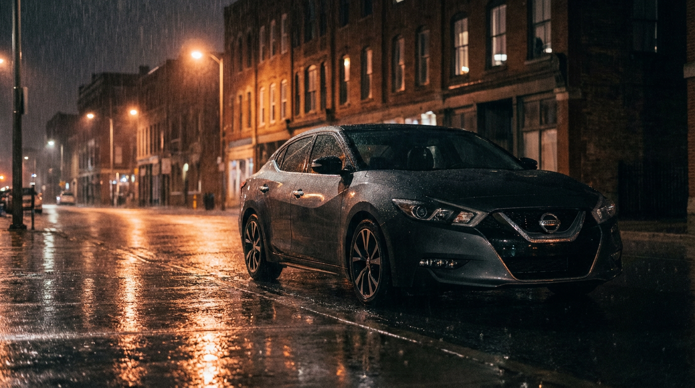

Nissan’s “Luxury” Sedan Is Twice as Deadly as the Altima

Here’s a fun fact that will ruin your morning commute. The Nissan Maxima — marketed for decades as Nissan’s “four-door sports car” — kills its occupants at a rate of 5.11 deaths per 100 million vehicle miles traveled. That’s nearly twice the rate of its cheaper sibling, the Altima (2.88), and within spitting distance of the Hyundai Veloster (8.54) and Ford Mustang (6.02) — actual sports cars that at least have the decency to look dangerous.
The Maxima accumulated 1,544 fatalities across 2,331 fatal crashes between 2014 and 2023, from a relatively modest fleet of roughly 262,500 vehicles. To put that in perspective, the Altima has a much larger fleet (1.44 million) and more total deaths (4,787), but its per-mile death rate is barely half the Maxima’s. More car, more leather, more dead.
The model year breakdown tells a story of generational carnage. The 2000 and 2004 model years are the deadliest, with 134 and 137 fatalities respectively — the peak of Maxima’s “VQ35 era” when Nissan stuffed a 255-hp V6 into what was essentially a front-wheel-drive Altima platform with nicer seats. The 2010 model year still managed 79 deaths. It wasn’t until the 2018+ models that numbers finally dropped below 25 — mostly because Nissan was barely selling them anymore.
And here’s where it gets cosmically absurd: the impairment rate is only 20.9%. That’s below the national average for sedans. Nearly 80% of fatal Maxima crashes involved sober drivers who simply could not keep the car on the road. The Altima’s drug-positive rate is comparable, but its alcohol rate runs higher. Maxima drivers aren’t even drunk — they’re just driving a car that punches above its weight class in horsepower and below it in structural integrity.
The Maxima occupies the most dangerous position in automotive taxonomy: fast enough to get into trouble, light enough to lose badly, and “luxurious” enough to make its driver feel invincible. It’s a Camry with a death wish and a leather-wrapped steering wheel. Nissan finally discontinued it in 2023, but the 2000–2014 models are still very much on the road, still very much too fast, and still very much killing people who thought they were buying the sensible upgrade.